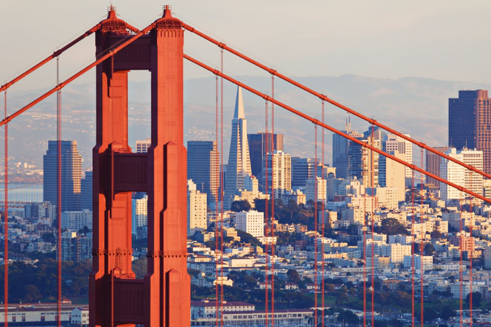
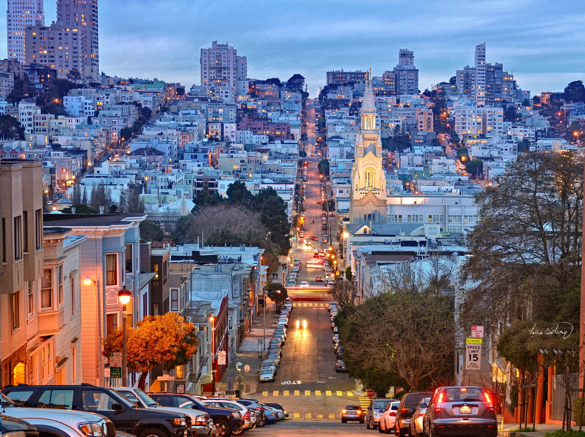

San Francisco is one of the most active and populated cities in the United States. This city is a huge tourist attraction that of which millions of people visit every year. This beautiful city is seen from miles away and the drive across the bridge is breathtaking. San Francisco is home to many “must stop” locations including The Golden Gate Bridge, Alcatraz, Pier 31, Lombard Street, Union Square, Chinatown and many more. San Francisco is known for its cool summers, fog, steep rolling hills, and the crazy mix of architecture. From hot summer days to the windy winter months, there is everything to do in this big city. From swimming to exploring to visiting cute cafes around the hilly streets, this city has it all. Picture perfect views and trolley rides that will make your stomach turn. All around the streets music is sung, jewelry is sold and creative artists are painting portraits that will blow your mind. Never a dull moment in this picture perfect city. San Francisco is definitely a top place to visit when trying to find those “must visit” travel destinations.
 